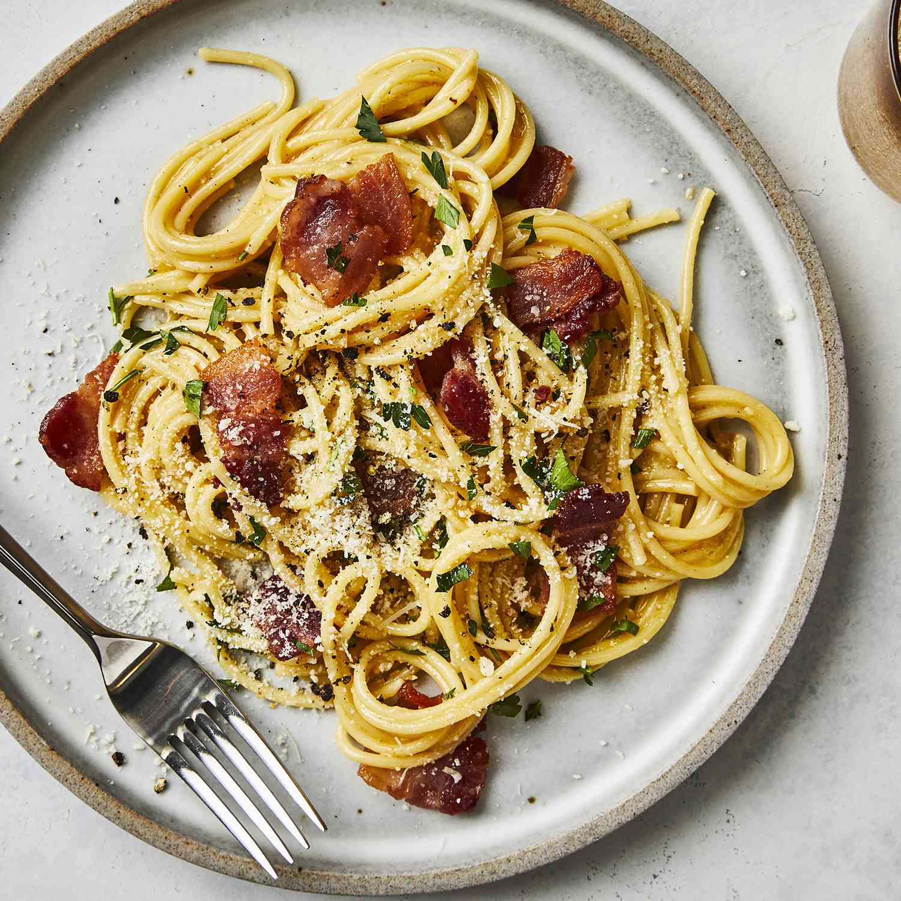

Un plato de pasta tipico de la cultura de Italia. Facil de hacer y listo en 15 minutos! Rinde 2 porciones aproximadamente.
Un plato simple pero con muchas versiones, las cuales genera discusiones, pero en esta ocasion, daremos la version màs originaria posible
El secreto aca, es su autenticidad, probando dar con los ingredientes màs apegados a su origen, el queso pecorino y el guanciale.
Ingredientes.
- 200 gramos de spagetthi, preferentemente de semola.
- 100 gramos de guanciale.
- 4 yemas de huevo.
- 100 gramos de queso pecorino rallado.
- Pimienta negra.
- Sal.
Pasos a seguir.
Esta receta sigue tecnicas de coccion basicas, empleando el agua de cocciòn para crear una crema con la yema de los huevos, el queso pecorino y la grasa del guanciale
- Hervir agua y hechar los 200 gramos de spaghetti
- Mientras se cocina la pasta, sofreir el guanciale picado en tiras o cubos.
- Mezclar las yemas con el queso pecorino, agregandole agua de cocciòn hasta crear una crema
- Agregarle a la mezcla la grasa del guanciale
- Colar los fideos ya cocidos y agregarlos a una sarten, reservando una taza de agua de cocciòn de los fideos
- Con una sarten apagada, o si es necesario a fuego muy bajo, agregar la crema previamente hecha y el guanciale
- La temperatura va a pausterizar los huevos, pero no hay que permitir que estos coagulen en lo absoluto, sin dejar de revolver por uno a dos minutos, agregando agua de cocciòn si es necesario
- Condimentar con pimienta y sal y emplatar.